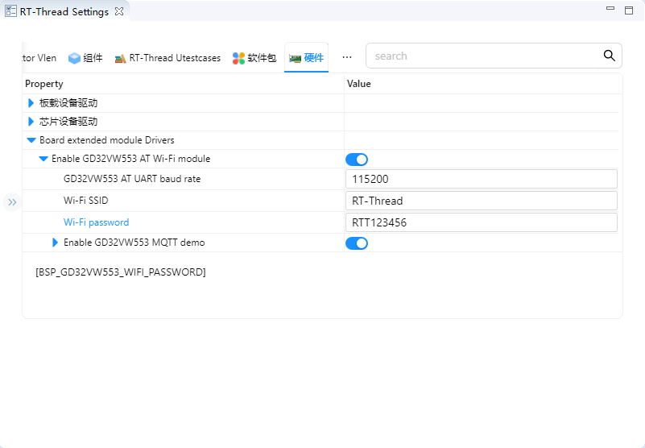

Gino_factory
1. 简介
本工程为 GD32H77D Gino 开发板提供 LVGL、摄像头、MQTT、以太网、存储与常用外设综合演示，通过触摸界面和控制台使用各项功能。
主参考设备：lcd。
所有示例均保留 uart1 作为 FinSH/MSH 控制台，串口参数为 115200-8-N-1；PC4 LED 用于运行指示。
当前工程包含以下 MSH 命令：
命令 |
作用 |
示例/备注 |
|---|---|---|
|
请求在 LCD 上启动摄像头实时预览。 |
显示和摄像头 ready 后使用。 |
|
启动 GD32VW553 MQTT 示例。 |
连接 Wi-Fi、Broker 和订阅路径。 |
|
查看网络设备的联网状态和 IP 地址。 |
确认网络已 ready。 |
|
查看系统已注册设备。 |
确认 UART、PIN、总线和目标设备存在。 |
|
扫描外部 I2C 地址 |
由 |
触摸界面的 I2C 页面固定扫描外部 hwi2c1（SCL PH4、SDA PB11），点击 Scan 后由 board_demo_backend.c 使用零数据长度的传输扫描地址。hwi2c2 和 hwi2c3 分别供摄像头和 GT911 触摸使用，不提供界面扫描入口。串口命令使用仓库内的 i2c-tools v1.0.0 软件包，采用硬件总线模式。打开工程前，Windows 执行 mklinks.bat，Linux 执行 sh mklinks.sh。执行 i2c 可查看扫描、读写命令用法；扫描范围按十六进制解析，结束地址不包含在内。
SPI 页面通过 SPI3 执行真实的全双工回环测试：短接 PF1（MOSI）与 PF0（MISO），SCK 为 PE12，使用 Mode 0、8 位数据且不使用片选。选择最大时钟频率和传输长度后点击 Run loopback，屏幕日志显示排队、配置、完整 TX/RX 十六进制数据及 PASS/FAIL；数据不一致时显示首个错误字节的位置和收发值。
I2C 页面使用与 i2c-tools 相同的 16 列地址矩阵，响应设备直接显示地址，无响应显示 --，未扫描显示 ..，探测错误显示 !!，保留地址留空。扫描范围为 0x08-0x77，结果逐地址更新，完成后显示设备总数和耗时。扫描不再逐地址休眠；获取总线锁最多等待 100 ms，持锁期间临时将驱动等待阶段的超时限制到 20 ms，探测结束后恢复原值。遇到超时或其他总线错误立即停止，保留已扫描结果，不把未完成的扫描误报为“无设备”。
Scan log 保留响应地址、异常和最终结果。SPI、I2C 测试执行期间禁用各自按钮和参数选择，提交失败会显示错误。日志同步输出到串口，每项保留本次任务最近 3 KB，屏幕可滚动查看。这些屏幕日志对应触摸界面发起的任务；I2C 页面目前只扫描地址，不提供特定芯片的数据或固件烧录功能。
1.1 Wi-Fi 配置
运行出厂示例前，需要将 Wi-Fi 名称和密码改为自己的网络信息。配置方法和截图参考 Gino_component_mqtt，但各工程的配置相互独立，需要在 Gino_factory 中修改。
板载 GD32VW553 AT 模块使用 UART4（TX PB12、RX PB13，AF14），PC5 控制复位，网络设备名为 wifi0；UART1 仍用于控制台。
Env
在 Env 中从 SDK 根目录进入
projects\Gino_factory；尚未建立共享目录链接时，先执行mklinks.bat。执行
menuconfig，进入以下菜单：Hardware Drivers Config -> Board extended module Drivers -> Enable GD32VW553 AT Wi-Fi module保持模块启用，将
Wi-Fi SSID和Wi-Fi password改为自己的网络名称和密码。GD32VW553 AT UART baud rate保持为115200；若模块固件使用其他波特率，则与固件保持一致。保存退出后，执行
scons --pyconfig-silent更新rtconfig.h。使用 MDK5 时，再执行scons --target=mdk5更新工程文件。

RT-Thread Studio
打开出厂工程的
RT-Thread Settings，选择“硬件”页签。展开
Board extended module Drivers -> Enable GD32VW553 AT Wi-Fi module，保持模块启用。修改
Wi-Fi SSID和Wi-Fi password，确认 AT 串口波特率，保存设置以更新工程配置。

这两个配置项分别对应 BSP_GD32VW553_WIFI_SSID 和 BSP_GD32VW553_WIFI_PASSWORD。请填写自己的网络信息，截图中的数值仅作示例。保存后重新编译、下载出厂固件，并复位开发板，使配置生效。
1.2 Wi-Fi 与 MQTT 验证
在 UART1 控制台执行 ifconfig，确认 wifi0 已启用、链路已连接，且 IP 地址不是 0.0.0.0。出厂工程同时启用了以太网 e0，以太网已连接不代表 Wi-Fi 已就绪。若 wifi0 未联网，检查 SSID、密码、热点是否可用、模块供电与复位，以及 AT 串口波特率。
使用 MQTT 时，在同一配置菜单中保持 Enable GD32VW553 MQTT demo 启用，并按自己的服务设置 Broker 地址/端口、订阅/发布主题、client ID 和可选的用户名/密码。主题可以自行定义。模块固件不支持 AT+CIPDOMAIN DNS 查询时，使用数字 IPv4 Broker 地址。
配置生效并确认 wifi0 就绪后，执行：
gd32vw553_mqtt_start
gd32vw553_mqtt_pub rtt/gino hello
gd32vw553_mqtt_stop
等待 MQTT 连接和订阅成功后再发布，将 rtt/gino 替换为自己的主题，并在 Broker/订阅端确认收到消息。MQTT 示例运行时临时选择 wifi0 为默认网络设备，停止后恢复原来的默认设备。
2. 多外设并发与系统集成详解
综合工程用于验证各独立功能能否同时共享引脚、初始化级别、DMA、Cache、SDRAM、网络默认路由和系统 heap。显示持续从 SDRAM 扫描，摄像头和 ENET 同时使用 DMA，Wi-Fi/MQTT 通过 SAL 选择 wifi0，文件系统在设备注册后挂载；它更接近真实产品负载。
一次完整的数据路径如下：
各驱动注册 -> DFS/lwIP/LVGL/SAL -> 显示 + 摄像头 + 存储 + e0/wifi0 + MQTT 并发运行
协议层只定义通信或数据处理规则，最终仍需要控制器时钟、引脚复用、中断/DMA 和上层状态机共同工作。扫描到设备、注册了总线或编译通过，都不能替代完整的数据传输验证。
3. GD32H77D 的多总线、多 DMA 与存储器特性
综合工程同时使用 GD32H77D 的 SDRAM/TLI/DSI、DCI/DMA、ENET1、OSPI0、SDIO1、USBHS、CAN、SPI、I2C、UART 和定时器。重点是验证引脚、DMA、Cache、总线带宽、内存区域和中断优先级能否共存。
4. RT-Thread 综合设备与组件接口
RT-Thread 层同时运行设备框架、DFS/FAL/FatFs、lwIP/netdev/SAL、at_device、LVGL、touch、camera 和 MQTT 线程。应用通过统一设备名、自动初始化级别和 IPC 协调模块。
主参考设备：lcd。设备是否已注册可先通过 list_device 和 gino_device_probe 判断；更上层的文件系统、网络或 GUI 组件还需继续验证其挂载、链路或刷新状态。
5. 硬件说明
综合启用 720 x 720 LCD、GT911、OV7670、GD32VW553、ENET1、OSPI Flash、SDIO、USB、CAN、SPI、I2C 和 PWM。各接口接线与电气条件分别遵循对应独立工程。
默认控制台：UART1，PA2/PA3，AF7，115200-8-N-1。
6. 工程示例说明
以下源码路径以 SDK 仓库中的工程目录为基准：
applications/board_demo.capplications/board_demo_backend.capplications/lv_port.capplications/ov7670_preview.capplications/gd32vw553_mqtt_demo.cboard/SConscript
建议先阅读 applications/main.c 和 applications/device_probe.c，再沿数据路径进入对应驱动、组件或软件包。示例保留 MSH 命令，便于在不改动应用代码的情况下观察设备注册和运行状态。
tests/run_host_tests.ps1 使用本机 GCC 和模拟总线验证命令分发、扫描结果、超时停止及超时参数恢复，不编译固件。默认使用 MSYS2 UCRT64 GCC，可通过 -Compiler 指定路径。测试直接提取当前后端函数；不能替代上板检查接线、ACK 波形与实际扫描耗时。
6.1 运行命令
ov7670_preview startgd32vw553_mqtt_startifconfiglist_devicei2c scan hwi2c1 08 78
6.2 运行步骤
检查供电、接线、外部模块和接口电平。
复位开发板，确认 UART1 控制台可用且 PC4 LED 正常闪烁。
执行
list_device，确认依赖总线和目标设备均已注册。按顺序执行上述命令，并同时观察返回值、外部波形、网络状态或显示结果。
7. 运行效果
7.1 预期现象
list_device中出现已启用的 LCD、触摸、摄像头、存储、网络和总线设备。LVGL、摄像头预览、以太网/Wi-Fi 和文件系统可以分别启动，并能在合理负载下共存。
触摸界面提供板级功能入口，控制台可操作摄像头、网络和 MQTT。
I2C 触摸页面和
i2c scan命令均可列出所选总线上有响应的从设备地址。SPI 回环页面显示收发数据及校验结果，I2C 页面显示扫描过程日志和响应地址。